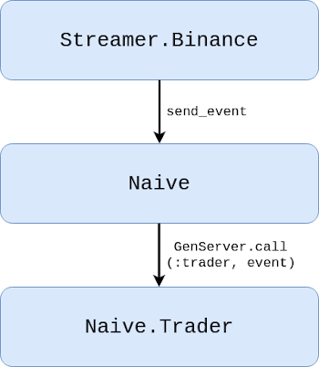
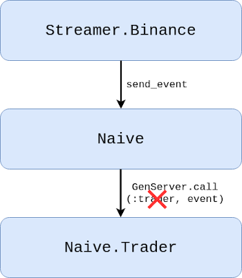
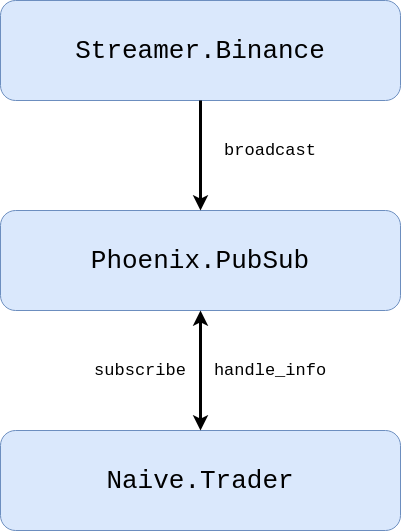
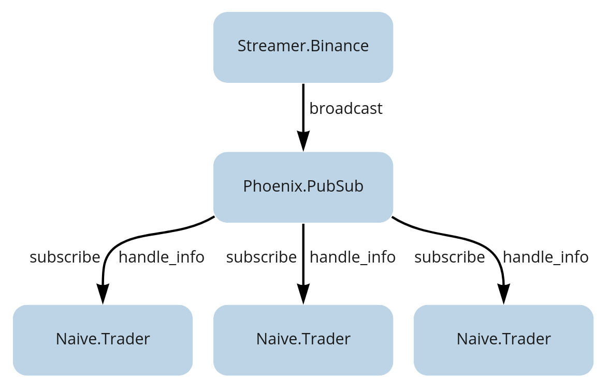
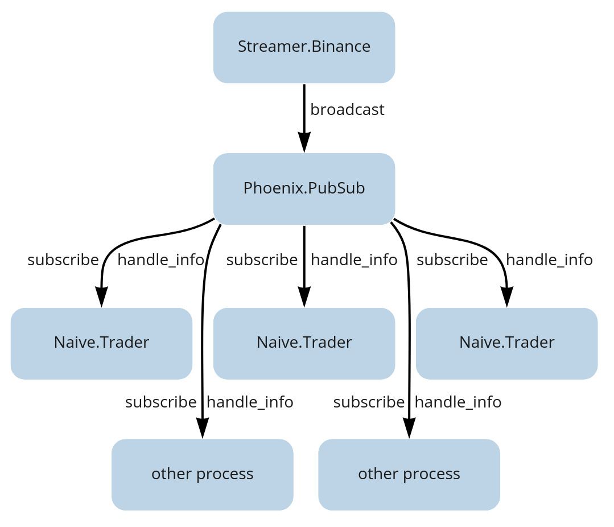

Chapter 3 Introduce PubSub as a communication method
Think of our current communication system as a direct phone call.
For the Streamer to send a message, it needs to know the Trader’s exact “phone number”
- in our case, its process ID or registered name.
What if we could change this to a radio broadcast instead?
The Streamer simply transmits on a known frequency (a “topic”), and anyone with a radio can tune in - no phone numbers needed.
In this chapter, we’ll do just that by introducing
the Publish-Subscribe pattern. This pattern lets our Streamer broadcast data to a
topic, and any number of Trader processes can tune in. The result?
A system that’s far more flexible and scalable.
3.1 Objectives
- Understand the architectural benefits of the Publish-Subscribe (PubSub) pattern.
- Implement
Phoenix.PubSubto decouple theStreamer.BinanceandNaive.Traderprocesses.
3.2 Design
First, let’s look at the current situation:

Currently, the Streamer.Binance process calls Naive.send_event/1 to
send a cast message to the single, named Naive.Trader process.
As our trading strategy grows, we’ll need to run multiple Naive.Trader
processes at the same time.
This immediately presents a problem: our current design relies on a single, named trader process, but we can’t register multiple processes under the same name.

A second, related issue is tight coupling.
The Streamer currently has to keep track of exactly which processes need its data
and how to reach them. Imagine adding a new feature that needs trade events - say, a logging module.
With our current design, we’d have to modify Streamer.Binance to call the logger too.
Every new consumer means another change to the producer.
By shifting this responsibility, the Streamer can simply broadcast events, and any interested process can listen in on its own terms.
To fix these issues, we’ll utilise a Publish-Subscribe (or PubSub) model:

The Streamer will broadcast events to a specific topic.
Any process interested in that data can subscribe to the topic and will
automatically receive the messages. This completely decouples the Streamer from
the Naive app.
With this new design, we can easily run multiple traders. Each one simply subscribes to the relevant topic to start receiving messages:

This decoupled design also opens up future possibilities. For example, a separate process could subscribe to the same topic to save data to a database for backtesting:

3.3 Implementation
Let’s start by adding the Phoenix.PubSub library
as a dependency to both the Streamer and Naive apps.
The Streamer app will act as the publisher (or broadcaster),
while the Naive app will contain our subscribers (the Naive.Trader processes).
As the library’s README on GitHub explains, we first need to add :phoenix_pubsub as a dependency in each app’s mix.exs file:
# /apps/streamer/mix.exs & /apps/naive/mix.exs
# Note: deps are conventionally kept in alphabetical order
defp deps do
[
...
{:phoenix_pubsub, "~> 2.0"},
...
]
endArchitectural Note - The Dependency Leak: Notice what we just did, to make our trading logic work,
the naive app still has a physical dependency on the streamer app.
Even though PubSub is supposed to “decouple” our processes, our project structure is now tightly coupled.
This is a prime example of the “umbrella tax”. If we ever wanted to move the naive trading logic to a
different server without the streamer,
we couldn’t do it easily because of {:streamer, in_umbrella: true} line in our mix.exs.
In Phase 3, we will see how moving to a monolith or a more refined structure can actually simplify these relationships.
Next, we need to add Phoenix.PubSub as a child in our application’s supervision tree.
Since the Streamer app is our publisher, it’s the logical place to host the PubSub server.
We’ll modify /apps/streamer/lib/streamer/application.ex by adding
it to the list of children:
# /apps/streamer/lib/streamer/application.ex
def start(_type, _args) do
children = [
{
Phoenix.PubSub,
name: Streamer.PubSub
}
]
...
endNote: Shared Resources in Umbrellas
You might wonder how the Naive app will be able to find Streamer.PubSub since it lives inside the Streamer application.
Because we are using an umbrella project, all our applications are started within the same Erlang node.
This means they share the same memory space and process registry. As long as the Streamer app has started the PubSub process,
any other app in our umbrella can “see” and interact with it simply by using its name.
Phoenix.PubSub ships with Phoenix.PubSub.PG2 as its default adapter.
This adapter leverages Erlang’s built-in pg (process groups) module,
enabling distributed messaging across your cluster.
The practical implication is significant: your Streamer and Naive applications could run on
separate servers and still communicate transparently, as though they were running locally - as long as they’re part of the same Erlang cluster.
Now, let’s modify the Streamer to broadcast/3 messages to a PubSub topic instead of calling the Naive module directly:
# /apps/streamer/lib/streamer/binance.ex
defp process_event(...) do
...
Phoenix.PubSub.broadcast(
Streamer.PubSub,
"TRADE_EVENTS:#{trade_event.symbol}",
trade_event
)
endInside the trader’s init/1 callback, we need to subscribe/2 to the TRADE_EVENTS topic:
# /apps/naive/lib/naive/trader.ex
def init(...) do
...
Phoenix.PubSub.subscribe(
Streamer.PubSub,
"TRADE_EVENTS:#{symbol}"
)
...
endBut Wait - What If Messages Arrive Before We Have the Tick Size?
Let’s look carefully at what’s happening in our updated init/1:
# /apps/naive/lib/naive/trader.ex
def init(%{symbol: symbol, profit_target: profit_target}) do
symbol = String.upcase(symbol)
Logger.info("Initializing new trader for #{symbol}")
Phoenix.PubSub.subscribe( # <- we subscribe here...
Streamer.PubSub,
"TRADE_EVENTS:#{symbol}"
)
{:ok,
%State{
symbol: symbol,
profit_target: profit_target,
tick_size: nil # <- ...but tick_size is still nil!
}, {:continue, :fetch_tick_size}}
end
def handle_continue(:fetch_tick_size, %State{symbol: symbol} = state) do
tick_size = fetch_tick_size(symbol) # <- tick_size fetched here
{:noreply, %{state | tick_size: tick_size}}
endWe subscribe to trade events in init/1, but we don’t fetch the tick_size until handle_continue/2 runs.
What if a trade event arrives in that window? Could we receive a message before our trader is fully initialized?
This is a great question, and the answer reveals something important about how GenServers work.
Here’s the actual execution sequence:
init/1runs - we subscribe to PubSub and return{:ok, state, {:continue, :fetch_tick_size}}handle_continue/2runs - we fetch thetick_sizefrom Binance- Only now does the GenServer start processing messages from the mailbox
The key insight: handle_continue/2 isn’t a message that gets queued in your mailbox.
It’s a direct function call that happens immediately after init/1 returns,
before the GenServer even looks at its mailbox.
Think of the {:continue, ...} tuple as saying “I’m not done setting up yet.”
So while trade events might be piling up in the mailbox during steps 1 and 2, they’ll wait patiently.
The GenServer won’t call handle_info/2 until the entire initialization sequence - including all handle_continue/2 callbacks - is complete.
This is exactly why handle_continue/2 exists:
it lets us perform slow initialization (like network requests) without blocking the supervisor,
while still guaranteeing our process is fully ready before it handles any real work.
Next, we’ll replace the handle_cast/2 callbacks in our Trader with handle_info/2.
This change is crucial, and it’s important to understand why.
When you use GenServer.cast/2, it wraps your message with a special :"$gen_cast" tag.
The GenServer recognizes this tag and routes the message to handle_cast/2.
But Phoenix.PubSub doesn’t use GenServer.cast/2 - it sends plain Elixir messages directly to your process mailbox using Process.send/3.
Without that :"$gen_cast" tag, our messages arrive as “untagged” messages.
Think of handle_info/2 as the catch-all for anything that isn’t a standard call or cast.
That’s exactly where our PubSub messages will land.
Finally, we can remove the send_event/1 function from the Naive module,
as it’s no longer needed.
With all our code changes in place, it’s a good time to run mix format to keep
the codebase consistent and tidy.
Now, let’s jump into an iex session to test our new broadcast system.
We’ll start a Streamer and a Naive.Trader for the same symbol.
As you can see in the output below, the Trader successfully subscribes to the topic,
receives events, and completes a full trading cycle:
$ iex -S mix
...
iex(1)> Streamer.start_streaming("xrpusdt")
{:ok, #PID<0.483.0>}
iex(2)> Naive.Trader.start_link(%{symbol: "XRPUSDT", profit_target: "-0.01"})
23:46:37.482 [info] Initializing new trader for XRPUSDT
{:ok, #PID<0.474.0>}
23:46:55.179 [info] Placing BUY order for XRPUSDT @ 0.29462000, quantity: 100
23:46:55.783 [info] Buy order filled, placing SELL order for XRPUSDT @ 0.29225,
quantity: 100.00000000
23:46:56.029 [info] Trade finished, trader will now exitThe radio broadcast is live! Our Streamer is now sending signals into the ether,
and our Trader is successfully tuning in.
This decoupling is a major milestone - we’ve removed the hard dependency between producer and consumer,
opening the door to the multi-trader system we’ll build in the upcoming chapters.
However, we have a major bottleneck in our development process: our complete dependence on the live Binance API.
This makes testing slow, requires a funded account, and makes it difficult to reproduce specific market conditions.
In the next chapter,
we’ll leverage the decoupled architecture we just built to solve this problem.
We will create a BinanceMock application that perfectly mimics the real exchange’s
behavior. This will give us a safe, fast, and free environment to test and refine
our trading logic without risking a single cent.
You can find the complete source code for this chapter in the book’s repository (branch: chapter_03).